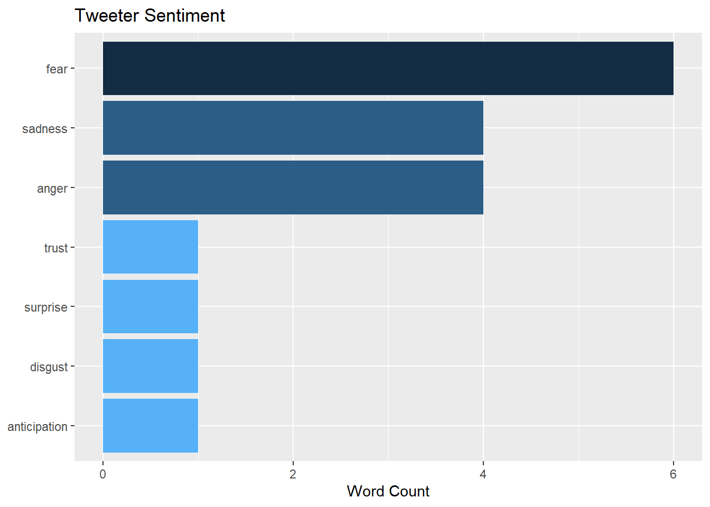

Chapter 7 Conclusion
7.1 R Markdown
This is an R Markdown document. Markdown is a simple formatting syntax for authoring HTML, PDF, and MS Word documents. For more details on using R Markdown see http://rmarkdown.rstudio.com.
When you click the Knit button a document will be generated that includes both content as well as the output of any embedded R code chunks within the document. You can embed an R code chunk like this:
library(rtweet)
library(sjmisc)
library(dplyr)
tag <- c('corona', '#corona', 'coronavirus', '#coronavirus', 'covid', '#covid', 'covid19', '#covid19', 'covid-19', '#covid-19', 'sarscov2', '#sarscov2', 'sars cov2', 'sars cov 2', 'covid_19', '#covid_19', '#ncov', 'ncov', '#ncov2019', 'ncov2019', '2019-ncov', '#2019-ncov', 'pandemic', '#pandemic #2019ncov', '2019ncov', 'quarantine', '#quarantine', 'flatten the curve', 'flattening the curve', '#flatteningthecurve', '#flattenthecurve', 'hand sanitizer', '#handsanitizer', '#lockdown', 'lockdown', 'social distancing', '#socialdistancing', 'work from home', '#workfromhome', 'working from home', '#workingfromhome', 'ppe', 'n95', '#ppe', '#n95', '#covidiots', 'covidiots', 'herd immunity', '#herdimmunity', 'pneumonia', '#pneumonia', 'chinese virus', '#chinesevirus', 'wuhan virus', '#wuhanvirus', 'kung flu', '#kungflu', 'wearamask', '#wearamask', 'wear a mask', 'vaccine', 'vaccines', '#vaccine', '#vaccines', 'corona vaccine', 'corona vaccines', '#coronavaccine', '#coronavaccines', 'face shield', '#faceshield', 'face shields', '#faceshields', 'health worker', '#healthworker', 'health workers', '#healthworkers', '#stayhomestaysafe', '#coronaupdate', '#frontlineheroes', '#coronawarriors', '#homeschool', '#homeschooling', '#hometasking', '#masks4all', '#wfh', 'wash ur hands', 'wash your hands', '#washurhands', '#washyourhands', '#stayathome', '#stayhome', '#selfisolating', 'self isolating')Getting # followers
names <- c('BarackObama', 'justinbieber', 'ArianaGrande')
temp <- data.frame()
for (name in names){
line <- get_timelines(name, n=20)
temp <- rbind(line, temp)
}
followers_count <- temp$followers_count
temp## # A tibble: 60 x 90
## user_id status_id created_at screen_name text source
## <chr> <chr> <dttm> <chr> <chr> <chr>
## 1 34507480 1465479935712137217 2021-11-30 00:36:58 ArianaGrande "!!!!! ~ Twitt~
## 2 34507480 1465472555527991299 2021-11-30 00:07:39 ArianaGrande "one ho~ Twitt~
## 3 34507480 1465458087087656963 2021-11-29 23:10:09 ArianaGrande "https:~ Twitt~
## 4 34507480 1465456598982164480 2021-11-29 23:04:14 ArianaGrande "two ho~ Twitt~
## 5 34507480 1465447373258166272 2021-11-29 22:27:35 ArianaGrande "on my ~ Twitt~
## 6 34507480 1465443184461299717 2021-11-29 22:10:56 ArianaGrande "The #V~ Twitt~
## 7 34507480 1465417007197605888 2021-11-29 20:26:55 ArianaGrande "jimmy ~ Twitt~
## 8 34507480 1465388892660453376 2021-11-29 18:35:12 ArianaGrande "every ~ Twitt~
## 9 34507480 1465381395983790088 2021-11-29 18:05:24 ArianaGrande "foreve~ Twitt~
## 10 34507480 1465378351590219779 2021-11-29 17:53:19 ArianaGrande "@vcutg~ Twitt~
## # ... with 50 more rows, and 84 more variables: display_text_width <dbl>,
## # reply_to_status_id <chr>, reply_to_user_id <chr>,
## # reply_to_screen_name <chr>, is_quote <lgl>, is_retweet <lgl>,
## # favorite_count <int>, retweet_count <int>, quote_count <int>,
## # reply_count <int>, hashtags <list>, symbols <list>, urls_url <list>,
## # urls_t.co <list>, urls_expanded_url <list>, media_url <list>,
## # media_t.co <list>, media_expanded_url <list>, media_type <list>, ...Reference: https://stackoverflow.com/questions/31348453/how-do-i-clean-twitter-data-in-r
library(stringr)
clean_tweets <- function(x) {
x %>%
# Remove URLs
str_remove_all(" ?(f|ht)(tp)(s?)(://)(.*)[.|/](.*)") %>%
# Remove mentions e.g. "@my_account"
str_remove_all("@[[:alnum:]_]{4,}") %>%
# Replace "&" character reference with "and"
str_replace_all("&", "and") %>%
# Remove punctuation, using a standard character class
str_remove_all("[[:punct:]]") %>%
# Remove "RT: " from beginning of retweets
str_remove_all("^RT:? ") %>%
# Replace any newline characters with a space
str_replace_all("\\\n", " ") %>%
# Make everything lowercase
str_to_lower() %>%
# Remove any trailing whitespace around the text
str_trim("both") %>%
# remove unnecessary space
str_replace_all(" "," ")
}Clean the tweet data and extract the tweets that contains COVID related tags
output <- c()
cleaned_text <- clean_tweets(temp$text)
for (words in str_split(cleaned_text, " ")) {
f <- if_else(any(words %in% tag), 1, 0)
output <- append(output, f)
}
temp$output <- output
temp %>% filter(output == 1) -> temp2temp2 <- temp2 %>% select(user_id, text, lang, name, location, followers_count)
temp2## # A tibble: 1 x 6
## user_id text lang name location followers_count
## <chr> <chr> <chr> <chr> <chr> <int>
## 1 813286 The epidemic of gun violence~ en Barack ~ Washingt~ 130310207temp2[, c("joy", "trust", "anticipation", "sadness", "fear", "anger", "surprise", "disgust", "sentiment_score")] <- NA
temp2## # A tibble: 1 x 15
## user_id text lang name location followers_count joy trust anticipation
## <chr> <chr> <chr> <chr> <chr> <int> <lgl> <lgl> <lgl>
## 1 813286 The epi~ en Bara~ Washing~ 130310207 NA NA NA
## # ... with 6 more variables: sadness <lgl>, fear <lgl>, anger <lgl>,
## # surprise <lgl>, disgust <lgl>, sentiment_score <lgl>library(dplyr)
library(tidytext)
library(textdata)
for(i in 1:nrow(temp2)) {
tweets_data <- temp2[i,] %>%
unnest_tokens(word, text) %>% # break down into individual words
filter(!nchar(word) < 3) %>% # remove words that are unnecessary, like exclamations
anti_join(stop_words) # need to remove stop words because they are also unnecessary
tweets_nrc <- tweets_data %>%
inner_join(get_sentiments("nrc")) %>%
filter(!sentiment %in% c("positive", "negative"))
tweets_nrc_np <- tweets_data %>%
inner_join(get_sentiments("nrc")) %>%
filter(sentiment %in% c("positive", "negative")) %>%
mutate(score = if_else(sentiment=="positive", 1, -1))
sentiment_score <- sum(tweets_nrc_np$score) / nrow(tweets_nrc_np)
sentiments <- tweets_nrc %>%
group_by(sentiment, .drop = FALSE) %>%
summarise(word_count = n()) %>%
ungroup()
if("joy" %in% sentiments$sentiment){
temp2[i, "joy"] <- sentiments$word_count[which(sentiments$sentiment=="joy")]
}
if("trust" %in% sentiments$sentiment){
temp2[i, "trust"] <- sentiments$word_count[which(sentiments$sentiment=="trust")]
}
if("anticipation" %in% sentiments$sentiment){
temp2[i, "anticipation"] <- sentiments$word_count[which(sentiments$sentiment=="anticipation")]
}
if("sadness" %in% sentiments$sentiment){
temp2[i, "sadness"] <- sentiments$word_count[which(sentiments$sentiment=="sadness")]
}
if("fear" %in% sentiments$sentiment){
temp2[i, "fear"] <- sentiments$word_count[which(sentiments$sentiment=="fear")]
}
if("anger" %in% sentiments$sentiment){
temp2[i, "anger"] <- sentiments$word_count[which(sentiments$sentiment=="anger")]
}
if("surprise" %in% sentiments$sentiment){
temp2[i, "surprise"] <- sentiments$word_count[which(sentiments$sentiment=="surprise")]
}
if("disgust" %in% sentiments$sentiment){
temp2[i, "disgust"] <- sentiments$word_count[which(sentiments$sentiment=="disgust")]
}
# temp2[i,"joy"] <- if_else("joy" %in% sentiments$sentiment, sentiments$word_count[which(sentiments$sentiment=="joy")], 0)
# temp2[i,"trust"] <- if_else("trust" %in% sentiments$sentiment, sentiments$word_count[which(sentiments$sentiment=="trust")], 0)
# temp2[i,"anticipation"] <- if_else("anticipation" %in% sentiments$sentiment, sentiments$word_count[which(sentiments$sentiment=="anticipation")], 0)
# temp2[i,"sadness"] <- if_else("sadness" %in% sentiments$sentiment, sentiments$word_count[which(sentiments$sentiment=="sadness")], 0)
# temp2[i,"fear"] <- if_else("fear" %in% sentiments$sentiment, sentiments$word_count[which(sentiments$sentiment=="fear")], 0)
# temp2[i,"anger"] <- if_else("anger" %in% sentiments$sentiment, sentiments$word_count[which(sentiments$sentiment=="anger")], 0)
# temp2[i,"surprise"] <- if_else("surprise" %in% sentiments$sentiment, sentiments$word_count[which(sentiments$sentiment=="surprise")], 0)
# temp2[i,"disgust"] <- if_else("disgust" %in% sentiments$sentiment, sentiments$word_count[which(sentiments$sentiment=="disgust")], 0)
temp2[i, "sentiment_score"] <- sentiment_score
}
temp2## # A tibble: 1 x 15
## user_id text lang name location followers_count joy trust anticipation
## <chr> <chr> <chr> <chr> <chr> <int> <lgl> <int> <int>
## 1 813286 The epi~ en Bara~ Washing~ 130310207 NA 1 1
## # ... with 6 more variables: sadness <int>, fear <int>, anger <int>,
## # surprise <int>, disgust <int>, sentiment_score <dbl>tweets_nrc <- tweets_data %>%
inner_join(get_sentiments("nrc")) %>%
filter(!sentiment %in% c("positive", "negative")) %>%
select(user_id, lang, name, location, followers_count, word, sentiment)
tweets_nrc_np <- tweets_data %>%
inner_join(get_sentiments("nrc")) %>%
filter(sentiment %in% c("positive", "negative")) %>%
select(user_id, lang, name, location, followers_count, word, sentiment) %>%
mutate(score = if_else(sentiment=="positive", 1, -1))
tweets_nrc_np## # A tibble: 8 x 8
## user_id lang name location followers_count word sentiment score
## <chr> <chr> <chr> <chr> <int> <chr> <chr> <dbl>
## 1 813286 en Barack Obama Washington,~ 130310207 epide~ negative -1
## 2 813286 en Barack Obama Washington,~ 130310207 gun negative -1
## 3 813286 en Barack Obama Washington,~ 130310207 viole~ negative -1
## 4 813286 en Barack Obama Washington,~ 130310207 worse negative -1
## 5 813286 en Barack Obama Washington,~ 130310207 pande~ negative -1
## 6 813286 en Barack Obama Washington,~ 130310207 bias negative -1
## 7 813286 en Barack Obama Washington,~ 130310207 reform positive 1
## 8 813286 en Barack Obama Washington,~ 130310207 police positive 1Barplot for sentiments (excluding positive and negative)
library(ggplot2)
sentiment_plot <- tweets_nrc %>%
group_by(sentiment) %>%
summarise(word_count = n()) %>%
ungroup() %>%
mutate(sentiment = reorder(sentiment, word_count)) %>%
#Use `fill = -word_count` to make the larger bars darker
ggplot(aes(sentiment, word_count, fill = -word_count)) +
geom_col() +
guides(fill = "none") + # no legend
labs(x = NULL, y = "Word Count") +
# scale_y_continuous(limits = c(0, 100)) +
ggtitle("Tweeter Sentiment") +
coord_flip()
sentiment_plot
Comparison of positive vs. negative
sentiment_plot_np <- tweets_nrc_np %>%
group_by(sentiment) %>%
summarise(word_count = n()) %>%
ungroup() %>%
mutate(sentiment = reorder(sentiment, word_count)) %>%
#Use `fill = -word_count` to make the larger bars darker
ggplot(aes(sentiment, word_count, fill = -word_count)) +
geom_col() +
guides(fill = "none") + # no legend
labs(x = NULL, y = "Word Count") +
# scale_y_continuous(limits = c(0, 100)) +
ggtitle("Tweeter Sentiment") +
coord_flip()
sentiment_score <- sum(tweets_nrc_np$score) / nrow(tweets_nrc_np)
sentiment_score## [1] -0.5sentiment_plot_np